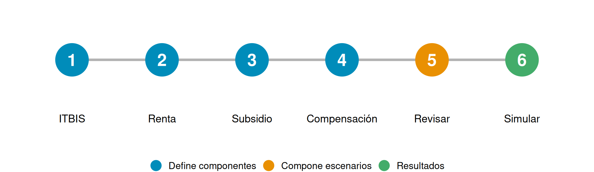
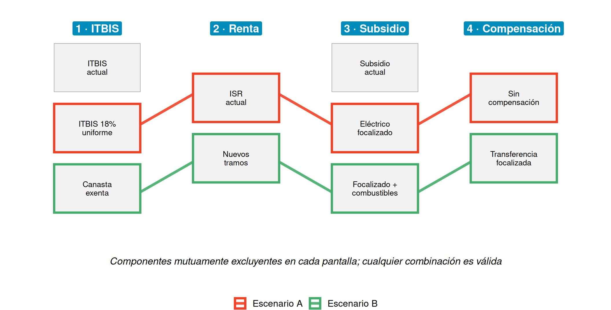

Instructivo
Cómo usar el simulador de escenarios fiscales, pantalla por pantalla
Descargue el material
Descargue la app desde la página principal. El archivo contiene la app, los datos y el código del simulador.
¿Qué hace la app?
Permite construir y comparar escenarios de reforma fiscal para República Dominicana. Corre localmente en su computadora, no requiere servidor Shiny y guía el trabajo en seis pantallas con botones Anterior / Siguiente.
NotaIdea central
Un escenario es una combinación de componentes. Es decir, de decisiones que son mutuamente excluyentes en cada pantalla. Cada decisión guardada en una pantalla es un componente.
Antes de empezar
- Instalar paquetes. Una sola vez, en la consola de R. La lista completa está en la página principal.
- Abrir el proyecto. En Positron o RStudio, use File → Open Folder… y elija la carpeta completa, no solo
app.R. - Lanzar. Abra
app.Ry haga clic en Run App. Como alternativa, en la consola:
shiny::runApp("app.R")Las seis pantallas
Las pantallas 1 a 4 definen componentes; la 5 los combina en escenarios y la 6 muestra los resultados. Las pantallas 2, 3 y 4 son opcionales: si no se cambia nada, el escenario usa la política vigente.
1 · ITBIS
- Tasas por producto, modificables por grupo, subclase o variedad individual.
- Pestaña Por clasificación: elija un grupo, una subclase o una variedad, indique la nueva tasa y presione Aplicar tasa.
- Pestaña Por tasa: liste todos los productos que tienen una tasa determinada, aunque pertenezcan a grupos distintos, selecciónelos y aplique la nueva tasa.
- Empezar de cero restablece todas las pantallas a la situación vigente.
Tip
Al terminar cada pantalla, guarde la decisión como un componente con el botón «Guardar esta política…». Un componente guardado queda disponible en «5 · Revisar».
2 · Renta
Escala del impuesto sobre la renta (ISR) personal. Es opcional y se personaliza por tramos: límites y tasas.
3 · Subsidio
La pantalla tiene dos partes, que se guardan juntas en un solo componente de subsidio.
Subsidio eléctrico. Opcional y personalizable por distribuidora (Edesur, Edenorte, Edeeste): límites de los bloques de consumo, cargo fijo y tarifa por kWh de cada bloque, y tarifa de los bloques iniciales.
Subsidio a combustibles. Desactivado por defecto. Al activarlo se define el subsidio en RD$ por galón de gasolina premium, gasolina regular, gasoil premium, gasoil regular y GLP. El cálculo incluye el efecto directo en el gasto de los hogares en combustibles y el efecto indirecto en los precios de otros bienes.
- Período del subsidio: meses Desde / Hasta en que rige el subsidio. La referencia es de mayo a diciembre. Si el mes inicial es posterior al final, el período cruza el fin de año.
- Precios: se pueden usar los precios mensuales de referencia de 2025 o un precio único por combustible, por ejemplo el precio actual, que reemplaza los de 2025 en todos los meses.
- «Ver precios de referencia (2025)» muestra la tabla de precios mensuales y el subsidio de referencia.
AdvertenciaSubsidio a combustibles: módulo con fines ilustrativos
Los precios, el calendario del subsidio y los patrones de consumo de combustibles de este módulo corresponden a 2025, los datos más recientes disponibles al construir la herramienta. Por la volatilidad del mercado de combustibles, las condiciones de precios han cambiado de forma sustancial desde entonces. Los resultados ilustran el método y el orden de magnitud de los efectos; no son una estimación vigente del costo fiscal ni del efecto distributivo de un subsidio, y no deben usarse para tomar decisiones sin antes actualizar los precios y los montos con información actual.
4 · Compensación
Transferencia compensatoria posterior a la reforma. Es opcional; al activarla se responden dos preguntas:
- ¿Quién recibe la compensación? Beneficiarios de Supérate, hogares hasta cierto decil de ingreso u hogares con Índice de Calidad de Vida (ICV) hasta cierto umbral.
- ¿Cómo se calcula el monto? Como la pérdida neta promedio causada por la reforma en los hogares hasta cierto decil, o como un valor fijo mensual en RD$ por hogar.
5 · Revisar
- Componer un escenario: escriba un nombre y elija un componente guardado por pantalla, o «Parámetros pre-reforma (referencia)» para dejar esa pantalla sin cambios. Luego presione Agregar escenario a la lista.
- Escenarios guardados: marque hasta cuatro para comparar. «Ver detalle» muestra las tasas y los parámetros de cada uno.
- Guardar / compartir: exporte los componentes y escenarios a Excel, o importe un archivo con ese formato. Antes de importar, presione Nueva sesión (borrar todo) para limpiar el ambiente de trabajo.
- El estado se guarda automáticamente y se restaura al abrir la app de nuevo.
6 · Simular
Presione Ejecutar microsimulación para correr los escenarios marcados y explore los resultados:
| Vista | Contenido |
|---|---|
| Resumen | Pobreza general, pobreza extrema, línea internacional, desigualdad, efecto fiscal y cuadros |
| Incidencia | Efectos por deciles, estrato, área, jefe de hogar, tipo de hogar y macrorregiones |
| Por instrumento | Efecto neto, ISR, ITBIS, subsidio eléctrico, subsidio a combustibles y compensación, por deciles |
Los escenarios son ilimitados; se comparan hasta cuatro a la vez.
Cómo se arma un escenario

Resumen
- Cada pantalla (1 a 4) produce componentes guardados: sus decisiones de política.
- En Revisar se forma cada escenario como una combinación de componentes: uno de cada pantalla, porque los de una misma pantalla son mutuamente excluyentes.
- En Simular se ejecutan los escenarios y se comparan (hasta cuatro).
Si la app no arranca, vea las indicaciones de la página principal o el vídeo de instrucciones.